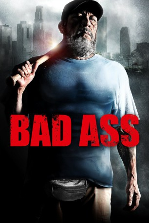

#285 Bad Ass
 gesehen am 09.03.2015
gesehen am 09.03.2015
 
 IMDB-Wertung: 5.5 / 10
IMDB-Wertung: 5.5 / 10  Metascore: 0
Metascore: 0 
Gerade aus dem Vietnamkrieg heimgekehrt, muss Frank Vega feststellen, dass man ihn in den USA nicht gerade mit offenen Armen empfängt. So hat ihn seine Freundin für einen anderen verlassen und auch sonst scheint man für einen Vietnamveteranen relativ wenig übrig zu haben. Ohne Job und Freundin verwahrlost Vega immer mehr, bis er schließlich auf der Straße landet und dort auch die nächsten 40 Jahre lebt. Alles ändert sich jedoch, als Frank Vega eines Tages in einem Linienbus einer von Skinheads bedrohten Dame beisteht und die Angreifer mit ein paar gezielten Schlägen zur Flucht zwingt. Vega wird zum gefeierten Lokalhelden, doch das Glück ist nur von kurzer Dauer, denn kurz nach seiner Heldentat wird Vegas bester Freund umgebracht. Als die Polizei beschließt, keine Ermittlungen in die Wege zu leiten, beginnt der Ex-Soldat kurzerhand selber für Gerechtigkeit zu sorgen.
Jahr: 2012
Dauer: 90 Minuten
FSK: 18
Land: USA Studio: Samuel Goldwyn FilmsTonspuren: DTS - ,
Untertitel:
Auflösung: 1080p (1920×1080) Größe: 7464 MB
Genre: Action, Komödie, Krimi, Drama
Regisseur: Craig Moss
Drehbuch: Craig Moss, Elliot Tishman
Soundtrack: Todd Haberman
Darsteller:
 Danny Trejo als Frank Vega
Danny Trejo als Frank Vega Charles S. Dutton als Panther
Charles S. Dutton als Panther Patrick Fabian als Officer Malark
Patrick Fabian als Officer Malark- Joyful Drake als Amber Lamps
- Harrison Page als Klondike Washington
 Richard Riehle als Father Miller
Richard Riehle als Father Miller Winter Ave Zoli als Tatiana
Winter Ave Zoli als Tatiana Tonita Castro als Juanita Vega
Tonita Castro als Juanita Vega- Andy Davoli als Renaldo
- Patricia De Leon als Marissa
- Frank Maharajh als Detective Shah
- Jillian Murray als Lindsay Kendall
- Shalim Ortiz als Frank Vega, 17-25 yrs
 Craig Sheffer als Attorney
Craig Sheffer als Attorney- Chris Spencer als Martin Sr.
 Ron Perlman als Mayor Williams
Ron Perlman als Mayor Williams- Jessica Lee als Woman in Purple
- John Dixon als Skinhead #1
- Olivia Moss als Emily Kendall
- Makenzie Moss als Nikki Kendall
 Jennifer Blanc als Frances
Jennifer Blanc als Frances- Christine Clayburg als News Anchor
- Craig Johnson als Sebastian
 Erik Betts als Terence
Erik Betts als Terence Ezra Buzzington als Store Clerk
Ezra Buzzington als Store Clerk- Anthony Martins als Gang Banger #1
 Marco Morales als Gang Banger #2
Marco Morales als Gang Banger #2- Chad Guerrero als Gang Banger #3
- Donzaleigh Abernathy als Mother
- Heidi Kramer als Rebecca Parker
 Duane Whitaker als Rex / Pawn Shop Owner
Duane Whitaker als Rex / Pawn Shop Owner Eddie J. Fernandez als Tattoo Guy
Eddie J. Fernandez als Tattoo Guy Thomas Rosales Jr. als Bartender
Thomas Rosales Jr. als Bartender- Tyler Tuione als Churchill
 Danny Woodburn als Master Sluggy Kornnuts
Danny Woodburn als Master Sluggy Kornnuts C.C. Taylor als Militant Guy
C.C. Taylor als Militant Guy- Larry Moran als Capt. Jenkins
- Robert Sean Burke als Bus Driver #2 , uncredited
- Isabella Cascarano als Agata , uncredited
- Brett Friedmann als Office Worker , uncredited
 Dorian Kingi als Two Dudes #1 , uncredited
Dorian Kingi als Two Dudes #1 , uncredited- Craig Moss als Generous Bus Driver , uncredited
 Joe Ordaz als Two Dudes #2 , uncredited
Joe Ordaz als Two Dudes #2 , uncredited Mark Rhino Smith als Other Baller #3 , uncredited
Mark Rhino Smith als Other Baller #3 , uncredited- Dan Snow als TV hockey announcer , uncredited
- John Duffy als Martin
- Kevin Patrick Burke als Skinhead #2
- Davenia McFadden als Rita
- Larry Richardson als Calvin
- Mackenzie King als Girl on Bus
Datei: X:\FSK18-2012\Bad Ass (2012, FSK18, 1920x1080).mkv seit 16.02.2015
Festplatte: FSK18
 Es gibt insgesamt 26 Filme in der Gruppe 'FSK18-2012'
Es gibt insgesamt 26 Filme in der Gruppe 'FSK18-2012'